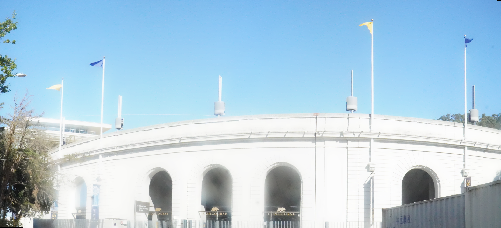

Overview
In this project, I calculated homography matrix, created a image warping function, and used masks to create a mosaic image.
Shoot and digitize pictures
First i went out and shot some pictures with similar exposure and focus length. I tried to use wide angle at a fixed position. I made sure for image mosaics, the images have at least 40% overlap. Below are the images I took.

|

|
Recover Homographies
In this part, I defined correspondences for the images and used the correspondences to calculate the homography matrix. The corresponding points formed systems of linear equations, which can be solved using the least squares methods. We need at least 4 points to calculate the homography matrix since the homography has 8 degrees of freedom. Below is how the homography matrix is calculated.
Warp the Images
With the homography matrix, I implemented a warp image function that forwatd warp one image and map the corresponding pixels from the original image to the warped one. More corresponding points and pixel reseampling will help to get a better result. Below are the results.
Image Rectification
In this part, I rectified the image by first specifying four corner points in the original image and then manually defined rectified points that are horizontal and vertical to each other. Then I used the rectified points to calculate the homography matrix and warp the image. Below are the results.
Blendng
In this part, first I warped the images in the mosaic set using the calculated homography matrix. To be more specific, I used one image as the target and rectified the other image. Then I aligned the images and created a mask for each image. To make the blending result better, I added a gray region in the binary mask and blurred the mask. Lastly, I used laplacian stacks to blend the images. Below are the results.

|
|
|
|
 |
Learning
In this part, I learned the calculation of homography matrix and how to utilize them for image rectification. I realized how important it is to define good correspondences and masks. I also realized that blurring and averaging the mask will help a lot in terms of the quality of image mosaics.